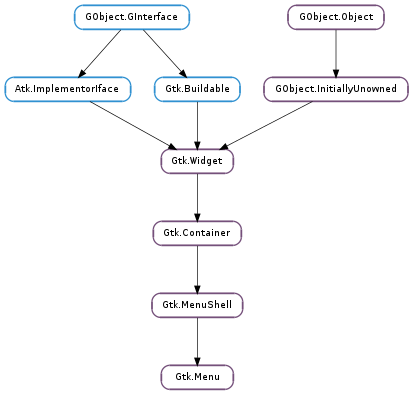

| Subclasses: | DbusmenuGtk3.Menu, Gtk.RecentChooserMenu |
|---|
| static | get_for_attach_widget(widget) |
| static | new() |
| static | new_from_model(model) |
| attach(child, left_attach, right_attach, top_attach, bottom_attach) | |
| attach_to_widget(attach_widget, detacher) | |
| detach() | |
| get_accel_group() | |
| get_accel_path() | |
| get_active() | |
| get_attach_widget() | |
| get_monitor() | |
| get_reserve_toggle_size() | |
| get_tearoff_state() | |
| get_title() | |
| popdown() | |
| popup(parent_menu_shell, parent_menu_item, func, data, button, activate_time) | |
| popup_for_device(device, parent_menu_shell, parent_menu_item, func, data, button, activate_time) | |
| reorder_child(child, position) | |
| reposition() | |
| set_accel_group(accel_group) | |
| set_accel_path(accel_path) | |
| set_active(index) | |
| set_monitor(monitor_num) | |
| set_reserve_toggle_size(reserve_toggle_size) | |
| set_screen(screen) | |
| set_tearoff_state(torn_off) | |
| set_title(title) |
| Name | Type | Flags | Description |
|---|---|---|---|
| accel-group | Gtk.AccelGroup | r/w | The accel group holding accelerators for the menu |
| accel-path | str | r/w | An accel path used to conveniently construct accel paths of child items |
| active | int | r/w | The currently selected menu item |
| attach-widget | Gtk.Widget | r/w | The widget the menu is attached to |
| monitor | int | r/w | The monitor the menu will be popped up on |
| reserve-toggle-size | bool | r/w | A boolean that indicates whether the menu reserves space for toggles and icons |
| tearoff-state | bool | r/w | A boolean that indicates whether the menu is torn-off |
| tearoff-title | str | r/w | A title that may be displayed by the window manager when this menu is torn-off |
| Name | Parameters | Return | Description |
|---|---|---|---|
| move-scroll | Gtk.ScrollType |
| Name | Type | Access |
|---|---|---|
| menu_shell | Gtk.MenuShell | r |
Bases: Gtk.MenuShell
A Gtk.Menu is a Gtk.MenuShell that implements a drop down menu consisting of a list of Gtk.MenuItem objects which can be navigated and activated by the user to perform application functions.
A Gtk.Menu is most commonly dropped down by activating a Gtk.MenuItem in a Gtk.MenuBar or popped up by activating a Gtk.MenuItem in another Gtk.Menu.
A Gtk.Menu can also be popped up by activating a Gtk.ComboBox. Other composite widgets such as the Gtk.Notebook can pop up a Gtk.Menu as well.
Applications can display a Gtk.Menu as a popup menu by calling the Gtk.Menu.popup () function. The example below shows how an application can pop up a menu when the 3rd mouse button is pressed.
Connecting the popup signal handler.
/* connect our handler which will popup the menu */
g_signal_connect_swapped (window, "button_press_event",
G_CALLBACK (my_popup_handler), menu);
Signal handler which displays a popup menu.
static gint
my_popup_handler (GtkWidget *widget, GdkEvent *event)
{
GtkMenu *menu;
GdkEventButton *event_button;
g_return_val_if_fail (widget != NULL, FALSE);
g_return_val_if_fail (GTK_IS_MENU (widget), FALSE);
g_return_val_if_fail (event != NULL, FALSE);
/* The "widget" is the menu that was supplied when
* g_signal_connect_swapped() was called.
*/
menu = GTK_MENU (widget);
if (event->type == GDK_BUTTON_PRESS)
{
event_button = (GdkEventButton *) event;
if (event_button->button == GDK_BUTTON_SECONDARY)
{
gtk_menu_popup (menu, NULL, NULL, NULL, NULL,
event_button->button, event_button->time);
return TRUE;
}
}
return FALSE;
}
| Parameters: | widget (Gtk.Widget) – a Gtk.Widget |
|---|---|
| Returns: | the list of menus attached to his widget. |
| Return type: | [Gtk.Widget] |
Returns a list of the menus which are attached to this widget. This list is owned by GTK+ and must not be modified.
| Returns: | a new Gtk.Menu |
|---|---|
| Return type: | Gtk.Widget |
Creates a new Gtk.Menu
| Parameters: | model (Gio.MenuModel) – a Gio.MenuModel |
|---|---|
| Returns: | a new Gtk.Menu |
| Return type: | Gtk.Widget |
Creates a Gtk.Menu and populates it with menu items and submenus according to model.
The created menu items are connected to actions found in the Gtk.ApplicationWindow to which the menu belongs - typically by means of being attached to a widget (see Gtk.Menu.attach_to_widget ()) that is contained within the Gtk.ApplicationWindows widget hierarchy.
Actions can also be added using Gtk.Widget.insert_action_group () on menu’s attach widget or any if its parent widgets.
| Parameters: |
|
|---|
Adds a new Gtk.MenuItem to a (table) menu. The number of ‘cells’ that an item will occupy is specified by left_attach, right_attach, top_attach and bottom_attach. These each represent the leftmost, rightmost, uppermost and lower column and row numbers of the table. (Columns and rows are indexed from zero).
Note that this function is not related to Gtk.Menu.detach ().
| Parameters: |
|
|---|
Attaches the menu to the widget and provides a callback function that will be invoked when the menu calls Gtk.Menu.detach () during its destruction.
If the menu is attached to the widget then it will be destroyed when the widget is destroyed, as if it was a child widget. An attached menu will also move between screens correctly if the widgets moves between screens.
Detaches the menu from the widget to which it had been attached. This function will call the callback function, detacher, provided when the Gtk.Menu.attach_to_widget () function was called.
| Returns: | the Gtk.AccelGroup associated with the menu |
|---|---|
| Return type: | Gtk.AccelGroup |
Gets the Gtk.AccelGroup which holds global accelerators for the menu. See Gtk.Menu.set_accel_group ().
| Returns: | the accelerator path set on the menu. |
|---|---|
| Return type: | str |
Retrieves the accelerator path set on the menu.
| Returns: | the Gtk.MenuItem that was last selected in the menu. If a selection has not yet been made, the first menu item is selected. |
|---|---|
| Return type: | Gtk.Widget |
Returns the selected menu item from the menu. This is used by the Gtk.ComboBox.
| Returns: | the Gtk.Widget that the menu is attached to |
|---|---|
| Return type: | Gtk.Widget |
Returns the Gtk.Widget that the menu is attached to.
| Returns: | the number of the monitor on which the menu should be popped up or -1, if no monitor has been set |
|---|---|
| Return type: | int |
Retrieves the number of the monitor on which to show the menu.
| Returns: | Whether the menu reserves toggle space |
|---|---|
| Return type: | bool |
Returns whether the menu reserves space for toggles and icons, regardless of their actual presence.
| Returns: | True if the menu is currently torn off. |
|---|---|
| Return type: | bool |
Returns whether the menu is torn off. See Gtk.Menu.set_tearoff_state ().
| Returns: | the title of the menu, or None if the menu has no title set on it. This string is owned by GTK+ and should not be modified or freed. |
|---|---|
| Return type: | str |
Returns the title of the menu. See Gtk.Menu.set_title ().
Removes the menu from the screen.
| Parameters: |
|
|---|
Displays a menu and makes it available for selection.
Applications can use this function to display context-sensitive menus, and will typically supply None for the parent_menu_shell, parent_menu_item, func and data parameters. The default menu positioning function will position the menu at the current mouse cursor position.
The button parameter should be the mouse button pressed to initiate the menu popup. If the menu popup was initiated by something other than a mouse button press, such as a mouse button release or a keypress, button should be 0.
The activate_time parameter is used to conflict-resolve initiation of concurrent requests for mouse/keyboard grab requests. To function properly, this needs to be the timestamp of the user event (such as a mouse click or key press) that caused the initiation of the popup. Only if no such event is available, Gtk.get_current_event_time () can be used instead.
| Parameters: |
|
|---|
Displays a menu and makes it available for selection.
Applications can use this function to display context-sensitive menus, and will typically supply None for the parent_menu_shell, parent_menu_item, func, data and destroy parameters. The default menu positioning function will position the menu at the current position of device (or its corresponding pointer).
The button parameter should be the mouse button pressed to initiate the menu popup. If the menu popup was initiated by something other than a mouse button press, such as a mouse button release or a keypress, button should be 0.
The activate_time parameter is used to conflict-resolve initiation of concurrent requests for mouse/keyboard grab requests. To function properly, this needs to be the time stamp of the user event (such as a mouse click or key press) that caused the initiation of the popup. Only if no such event is available, Gtk.get_current_event_time () can be used instead.
| Parameters: |
|
|---|
Moves child to a new position in the list of menu children.
Repositions the menu according to its position function.
| Parameters: | accel_group (Gtk.AccelGroup or None) – the Gtk.AccelGroup to be associated with the menu. |
|---|
Set the Gtk.AccelGroup which holds global accelerators for the menu. This accelerator group needs to also be added to all windows that this menu is being used in with Gtk.Window.add_accel_group (), in order for those windows to support all the accelerators contained in this group.
| Parameters: | accel_path (str or None) – a valid accelerator path |
|---|
Sets an accelerator path for this menu from which accelerator paths for its immediate children, its menu items, can be constructed. The main purpose of this function is to spare the programmer the inconvenience of having to call Gtk.MenuItem.set_accel_path () on each menu item that should support runtime user changable accelerators. Instead, by just calling Gtk.Menu.set_accel_path () on their parent, each menu item of this menu, that contains a label describing its purpose, automatically gets an accel path assigned.
For example, a menu containing menu items “New” and “Exit”, will, after gtk_menu_set_accel_path (menu, "<Gnumeric-Sheet>/File"); has been called, assign its items the accel paths: "<Gnumeric-Sheet>/File/New" and "<Gnumeric-Sheet>/File/Exit".
Assigning accel paths to menu items then enables the user to change their accelerators at runtime. More details about accelerator paths and their default setups can be found at Gtk.AccelMap.add_entry ().
Note that accel_path string will be stored in a GLib.Quark. Therefore, if you pass a static string, you can save some memory by interning it first with GLib.intern_static_string ().
| Parameters: | index (int) – the index of the menu item to select. Iindex values are from 0 to n-1 |
|---|
Selects the specified menu item within the menu. This is used by the Gtk.ComboBox and should not be used by anyone else.
| Parameters: | monitor_num (int) – the number of the monitor on which the menu should be popped up |
|---|
Informs GTK+ on which monitor a menu should be popped up. See Gdk.Screen.get_monitor_geometry ().
This function should be called from a Gtk.MenuPositionFunc if the menu should not appear on the same monitor as the pointer. This information can’t be reliably inferred from the coordinates returned by a Gtk.MenuPositionFunc, since, for very long menus, these coordinates may extend beyond the monitor boundaries or even the screen boundaries.
| Parameters: | reserve_toggle_size (bool) – whether to reserve size for toggles |
|---|
Sets whether the menu should reserve space for drawing toggles or icons, regardless of their actual presence.
| Parameters: | screen (Gdk.Screen or None) – a Gdk.Screen, or None if the screen should be determined by the widget the menu is attached to |
|---|
Sets the Gdk.Screen on which the menu will be displayed.
| Parameters: | torn_off (bool) – If True, menu is displayed as a tearoff menu. |
|---|
Changes the tearoff state of the menu. A menu is normally displayed as drop down menu which persists as long as the menu is active. It can also be displayed as a tearoff menu which persists until it is closed or reattached.
| Parameters: | title (str) – a string containing the title for the menu |
|---|
Sets the title string for the menu.
The title is displayed when the menu is shown as a tearoff menu. If title is None, the menu will see if it is attached to a parent menu item, and if so it will try to use the same text as that menu item’s label.